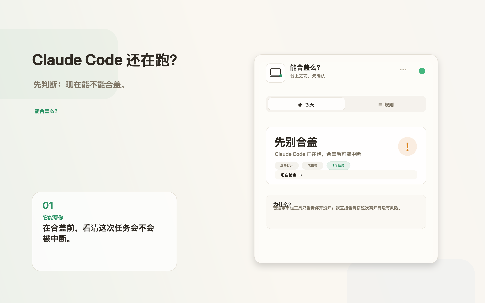
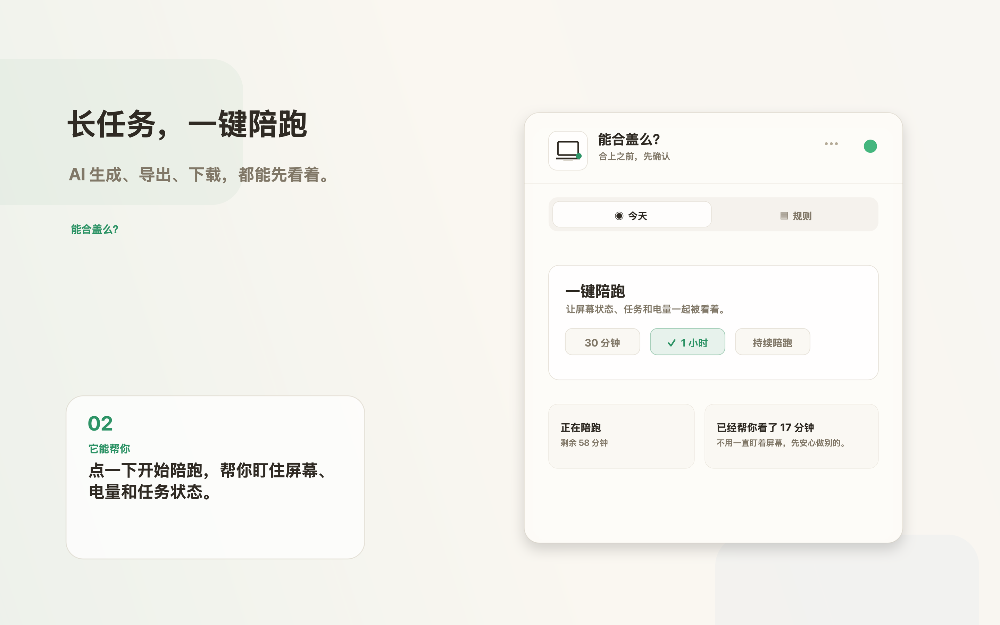
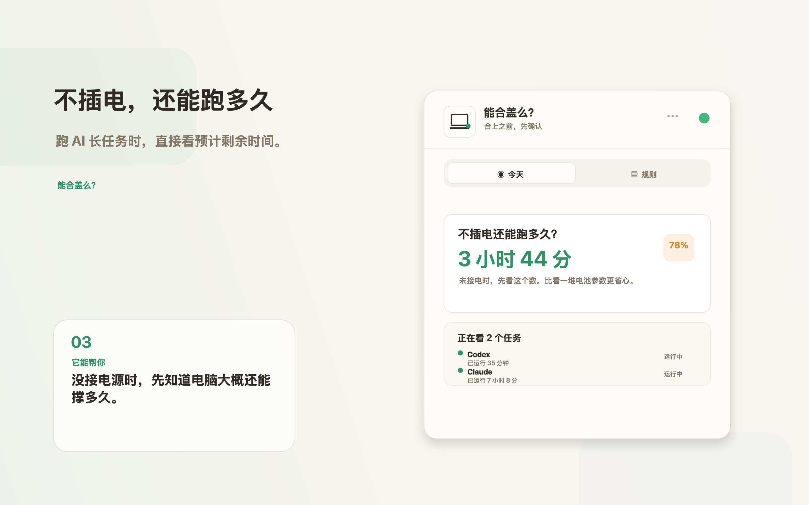
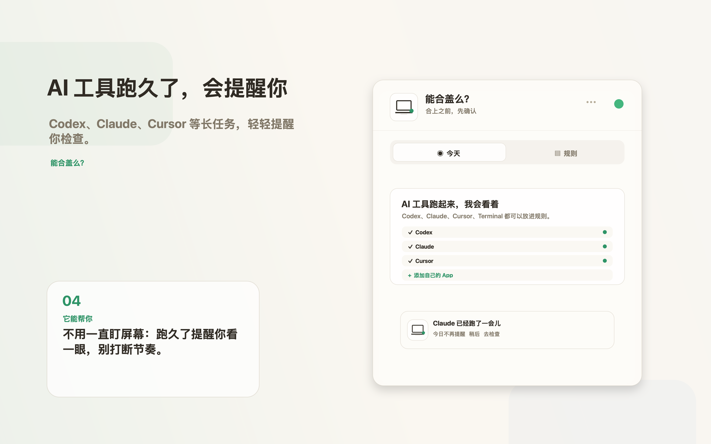
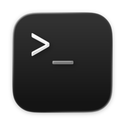

vibe coding 陪跑助手
Claude Code 还在跑，
我能离开吗？
能合盖么？把 AI 长任务、电源、屏幕和预计续航放到一个菜单栏小窗口里。离开电脑前，先看一眼，不靠猜。

先别合盖
Claude Code 正在跑，当前环境有中断风险。
普通工具告诉你“已开启”。
它要回答的是：这次离开，会不会出事？
01
不是让你盲目合盖，
合盖前确认
不是让你盲目合盖，
而是先告诉你风险。
当 Codex、Claude Code、Cursor 或 Terminal 还在跑，能合盖么？会结合电源、屏幕和任务状态，给一个更接近人话的判断。
它解决的问题
“我现在能不能离开电脑？”
02
长任务开始后，
一键陪跑
长任务开始后，
给它一段安静时间。
高频入口直接放在首页：30 分钟、1 小时、一直陪跑。适合生成代码、导出、下载、跑脚本这些“不想一直盯着，但又怕中断”的时刻。
它解决的问题
“我想去做别的事，但任务还要继续。”

03
没插电时，
预计续航
没插电时，
最重要的是还能跑多久。
不把电池信息拆成一堆技术数字。未接电时，优先展示系统可用的预计剩余时间，并把正在跑的任务放在同一张卡里。
它解决的问题
“这次离开，电量撑不撑得住？”

04
AI 工具跑久了，
温和提醒
AI 工具跑久了，
它会轻轻提醒你。
不弹吓人的警告，不打断你工作。只是在合适的时候提醒：要不要检查一下？你可以稍后、今日不再提醒，或立刻查看。
它解决的问题
“我忘了任务还在跑，也忘了检查状态。”

为 AI 长任务设计
它关注的是你正在真实使用的工具。
 Codex
Codex Claude Code
Claude Code Cursor
Cursor Windsurf
WindsurfCodeium
Trae
扣子 / Coze

Terminal本机优先
它看状态，
不看你的内容。
能合盖么？不需要账号，不上传你的代码、聊天内容或任务文本。它只在本机查看运行状态、电源、屏幕和电量等信息，用来帮你做离开前判断。
能合盖么？